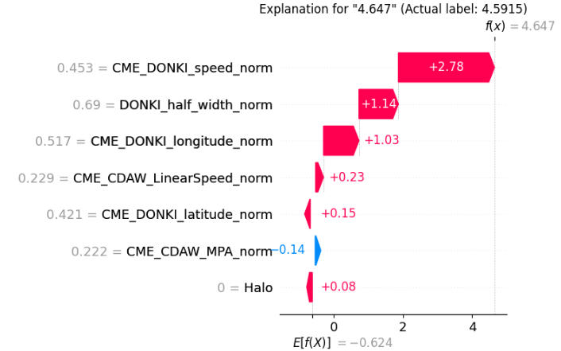
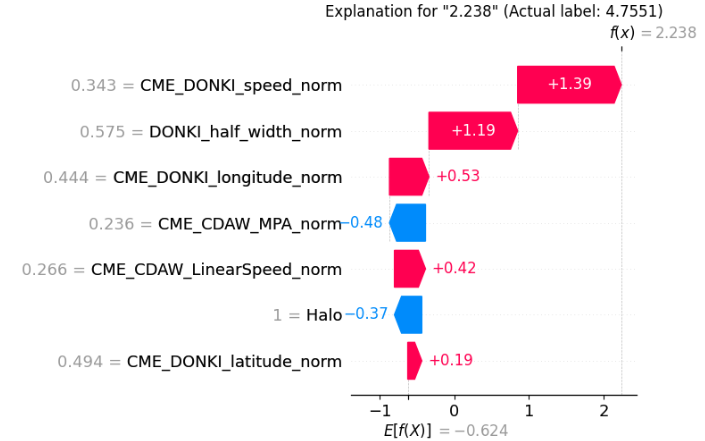

SHAP Explanation Tutorial (Regression)#
Full Code: view source code
Train/Test Files: training data, testing data
1. Core Code#
This core code is a sample from the
balanced_fitregression tutorial code.
import numpy as np
import pandas as pd
import tensorflow as tf
import keras
from tensorflow.keras import layers
import imbal
seed = 42
tf.keras.utils.set_random_seed(seed)
target_column = "ln_peak_intensity"
max_epochs = 300
batch_size = 32
train_data = pd.read_csv("../../../../../../tutorials/SEP-C/regression/sep_model_training_regression.csv")
test_data = pd.read_csv("../../../../../../tutorials/SEP-C/regression/sep_model_testing_regression.csv")
y_train = train_data[target_column].values.reshape(-1, 1).astype("float32")
y_test = test_data[target_column].values.reshape(-1, 1).astype("float32")
x_train = train_data.drop(columns=[target_column]).values.astype(np.float32)
x_test = test_data.drop(columns=[target_column]).values.astype(np.float32)
def build_model(input_shape: int) -> imbal.regression.Model:
inputs = keras.Input(shape=(input_shape,), name="features")
hidden1 = layers.Dense(18, activation="relu", name="hidden_layer1")(inputs)
hidden2 = layers.Dense(12, activation="relu", name="hidden_layer2")(hidden1)
hidden3 = layers.Dense(8, activation="relu", name="hidden_layer3")(hidden2)
hidden4 = layers.Dense(6, activation="relu", name="hidden_layer4")(hidden3)
outputs = layers.Dense(1, name="output_layer")(hidden4)
built_model = imbal.regression.Model(
inputs=inputs,
outputs=outputs,
name="sep_model",
)
return built_model
model = build_model(x_train.shape[1])
labels_kde = y_train.reshape(-1).copy()
kde = imbal.regression.fit_kde(labels_kde)
densities = imbal.regression.get_sample_densities(labels_kde, kde)
model.compile(
loss="mean_squared_error",
optimizer="adam",
metrics=["mae"],
)
from imbal.regression import reciprocal_importance
weights = reciprocal_importance(densities, alpha=0.8)
model.balanced_fit(
x_train,
y_train,
sample_weight=weights,
batch_size=batch_size,
epochs=max_epochs,
)
2. SHAP Explanations#
A. Small Error Prediction Example#
labels = train_data.drop(columns=[target_column]).columns.tolist()
target_sample_index = -6 # choose a rare sample to explain
imbal.regression.shap_explain_tabular_sample(
x_test[target_sample_index],
model,
x_train,
actual_label=np.round(float(y_test.reshape(-1)[target_sample_index]), 4),
feature_names=labels,
figure_save_path="shap-explanation.png",
plot_type="waterfall",
)
Explanation#
This example explains a sample where the model prediction is close to the actual regression label.
labelsstores the feature names so the explanation is readable.target_sample_index = -6selects a rare regression sample from the test set.shap_explain_tabular_sample(...)generates a local explanation for that one prediction.
B. Large Error Prediction Example#
labels = train_data.drop(columns=[target_column]).columns.tolist()
target_sample_index = -5 # choose a large error prediction of a rare sample to explain
imbal.regression.shap_explain_tabular_sample(
x_test[target_sample_index],
model,
x_train,
actual_label=np.round(float(y_test.reshape(-1)[target_sample_index]), 4),
feature_names=labels,
figure_save_path="shap-explanation-wrong.png",
plot_type="waterfall",
)
Explanation#
This second example is structured the same way, but it focuses on a sample where the model prediction is far from the actual regression label.
The code is identical except for the selected sample index.
By choosing a poorly predicted test point, we can compare which local feature contributions pushed the prediction away from the true value.
3. Results#
Small Error Prediction#

Large Error Prediction#

4. Understanding the SHAP Output#
The SHAP visualization explains why the model predicted the regression value that it did by attributing contributions to each feature relative to a baseline expectation.
Layout Guide (how to read the figure)#
The plot starts from a baseline value (shown near the bottom as (E[f(X)])).
Feature contributions are then added step-by-step to reach the final prediction (f(x)).
Features on the right side (red) push the predicted value higher.
Features on the left side (blue) push the predicted value lower.
The final regression prediction is shown at the top as (f(x)).
5. Interpreting the Difference Between the Two Explanations#
Small Error Prediction: Why the model predicted a value close to the true label#
Prediction: 4.647 vs actual 4.5915
The prediction is driven primarily by three dominant features:
CME_DONKI_speed_norm→ +2.78DONKI_half_width_norm→ +1.14CME_DONKI_longitude_norm→ +1.03
These three features alone account for the majority of the upward movement from the baseline.
Key takeaway:
The model gets this prediction right because the top 3 contributors are all large and aligned in the same direction (positive).
Smaller features (both positive and negative) have minimal impact relative to these dominant drivers.
Large Error Prediction: Why the model predicted too low compared to the true label#
Prediction: 2.238 vs actual 4.7551
Again, the prediction is mostly determined by the same top features—but their contributions change:
CME_DONKI_speed_norm→ +1.39 (significantly weaker)DONKI_half_width_norm→ +1.19 (still strong)CME_DONKI_longitude_norm→ +0.53 (reduced impact)
Key differences compared to the small error case:
The strongest driver (
speed) is cut roughly in half.The third contributor (
longitude) is also much weaker.
At the same time, negative contributors become more influential:
CME_CDAW_MPA_norm→ −0.48Halo→ −0.37
The model underestimates this sample because the top 3 positive drivers are not strong enough, and this leaves room for negative features to significantly lower the prediction.